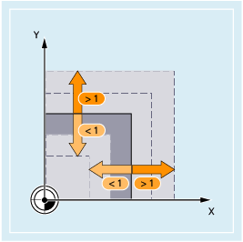
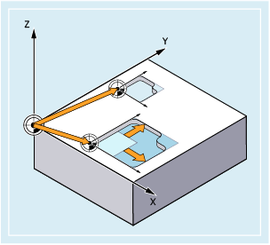
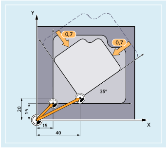

SCALE and ASCALE commands can be used to program up or down scale factors for all path, synchronized and positioning axes in the direction of the axes specified. This makes it possible, therefore, to take geometrically similar shapes or different shrinkage allowances into account in the programming.

| Absolute zoom in/zoom out | |
Reference system: | Workpiece coordinate system (SZS) currently set with G54 ... G57, G505 ... G599 | |
Alone in the block: | Yes | |
| Additive zoom in/zoom out | |
Reference system: | Currently set workpiece coordinate system or workpiece coordinate system last programmed using a frame instruction | |
Alone in the block: | Yes | |
| Scale factors in the direction of the specified geometry axes (path, synchronous and positioning axes) As example, the following definitions should apply:
You can specify an individual scale factor for each geometry axis, by which the shape is to be reduced or enlarged. | |
| Notice |
Absolute frame instructions delete all programmed framesIf a programmable frame builds on existing frames, then the additive frame instruction should be programmed instead of the absolute frame instruction. |
| Notice |
Distortion as a result of different scale factorsDifferent scale factors distort the original shape! If distortion is not intended, then the same factors must be used for scaling; for example, when scaling circular interpolations. |
Scaling a circular interpolation with the same scale factors
| Note |
Work offset after scalingIf a work offset is programmed with ATRANS after SCALE, then the offset values are also scaled. |
In the following example, two pockets with an identical shape but with different sizes are machined. The machining sequence is stored in the subprogram. The required workpiece zeros are set with a work offset; the contour is enlarged using scaling.
Also in this example, two pockets with identical shape but different size are duplicated in the workpiece, but rotated relative to each other. The machining sequence is stored in the subprogram. The required workpiece zeroes are set using work offset and rotation, the contour is reduced using scaling.
| Program code | Comment |
|---|---|
| N10 G17 G54 | ; Machining plane X/Y, workpiece zero |
| N20 TRANS X15 Y15 | ; Absolute offset |
| N30 L10 | ; Machine large pocket |
| N40 TRANS X40 Y20 | ; Absolute offset |
| N50 AROT RPL=35 | ; Rotation in the plane through 35° |
| N60 ASCALE X0.7 Y0.7 | ; Scaling factor for the small pocket |
| N70 L10 | ; Machine small pocket |
| N80 G0 X300 Y100 | ; Retraction |
| N90 M30 | ; End of program |
See also:
Programmable frames (overview)